"An explanatory note accompanies me on the right"- 1
- I appear when you hover your mouse over me 🐭 !
ggplot2In this practical session, We will learn how to create synthetic graphical representations with , which is very well equipped for this task thanks to the ggplot2 library. This library implements a grammar of graphics that is flexible, consistent, and easy to use.
Some code examples have annotations on the side; hover your mouse over them to display the notes, like below:
"An explanatory note accompanies me on the right"In this course, the practice of visualization will involve replicating charts found on the Paris Open Data page here.
This practical session aims to introduce:
ggplot2 package for creating static plots;plotly package for interactive HTML plots. We will deepen our knowledge of HTML plots in a later chapter using Observable.In this chapter, we will use the following libraries:
library(scales)
library(readr)
library(dplyr)
library(forcats)
library(lubridate)
library(ggplot2)
library(plotly)Then, we will see how to easily create maps in equivalent formats.
Being able to create interesting data visualizations is an essential skill for any data scientist or researcher. To improve the quality of these visualizations, it is recommended to follow some advice given by data visualization specialists on graphical semiology.
Good data visualizations, such as those in the New York Times, rely not only on appropriate tools (JavaScript libraries) but also on certain rules of representation that allow the message of a visualization to be understood in seconds.
This blog post is a useful resource to consult regularly. This blog post by Albert Rapp demonstrates how to gradually build a good data visualization.
A subset of Paris Open Data has been made available to facilitate import.
It is an extraction, somewhat dated, of the original dataset where only the columns used in this exercise have been retained.
We propose downloading these data and saving them to a local file before importing them1. However, we will not do this manually but rather use . Doing this manually would be bad practice in terms of reproducibility.
url <- "https://minio.lab.sspcloud.fr/projet-formation/diffusion/python-datascientist/bike.csv"
download.file(url, "bike.gz", mode = "wb").gz extension is important because readr needs it to understand that the file is compressed.
Trying to produce a perfect visualization on the first attempt is unrealistic. It is more realistic to gradually improve a graphic representation to highlight structural effects in a dataset step by step.
We will therefore start by representing the distribution of traffic at the main measurement stations.
To do this, we will quickly produce a barplot and then improve it gradually.
In this section, we will reproduce the first two charts from the data analysis page: The 10 counters with the highest hourly average and The 10 counters with the highest total counts. The numeric values in the plots will differ from those on the online page, which is normal because we are working with older data.
The data contains several dimensions suitable for statistical analysis. Therefore, it is necessary first to summarize them with aggregations to create a readable plot.
bike.gz file;df <- readr::read_csv("bike.gz") %>%
dplyr::rename(
`counter_id` = `Identifiant du compteur`,
`Counter name` = `Nom du compteur`,
`counting_site_id` = `Identifiant du site de comptage`,
`counting_site_name` = `Nom du site de comptage`,
`Hourly count` = `Comptage horaire`,
`Counting date and time` = `Date et heure de comptage`,
`counting_site_installation_date` = `Date d'installation du site de comptage`)df1 <- df %>%
group_by(`Counter name`) %>%
summarise(`Hourly count` = mean(`Hourly count`, na.rm = TRUE)) %>%
arrange(desc(`Hourly count`)) %>%
head(10)head(df1)# A tibble: 6 × 2
`Counter name` `Hourly count`
<chr> <dbl>
1 Totem 73 boulevard de Sébastopol S-N 197.
2 Totem 73 boulevard de Sébastopol N-S 148.
3 89 boulevard de Magenta NO-SE 144.
4 Totem 64 Rue de Rivoli O-E 140.
5 102 boulevard de Magenta SE-NO 137.
6 72 boulevard Voltaire NO-SE 124.We can now focus on producing the graphic
ggplot(df1, aes(y = `Counter name`, x = `Hourly count`)) +
geom_bar(stat = "identity")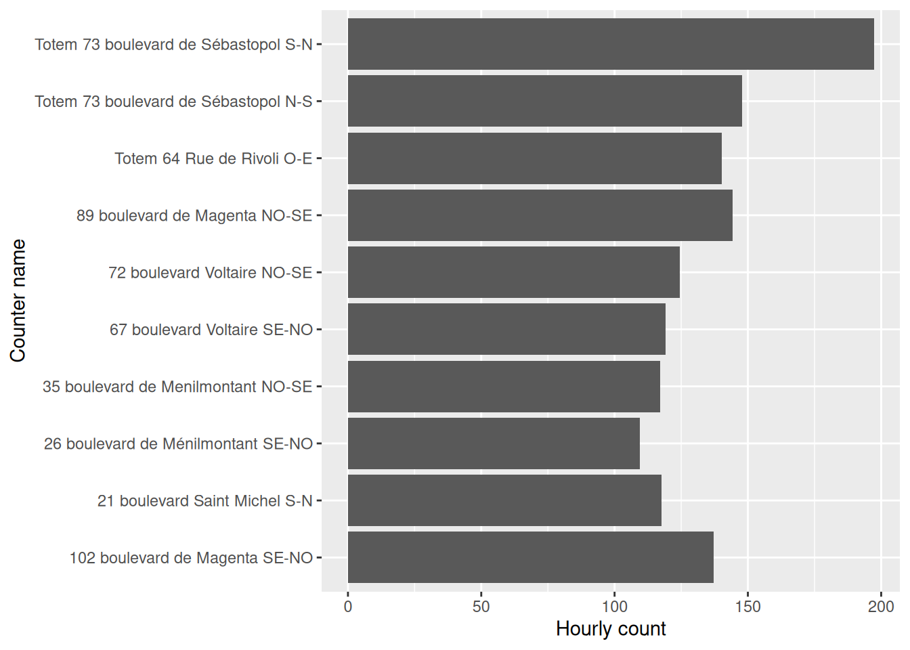
The next step is to gradually improve this representation to reproduce the version on the Paris Open Data page. The goal is to make it understandable in broad terms before focusing on aesthetics.
reorder function. This makes the figure’s message more readable.figure1 <- ggplot(df1,
aes(y = reorder(`Counter name`, `Hourly count`),
x = `Hourly count`)
) +
geom_bar(stat = "identity")
figure1Counter Name according to Hourly Count

figure1 <- ggplot(df1,
aes(y = reorder(`Counter name`, `Hourly count`),
x = `Hourly count`)
) +
geom_bar(stat = "identity", fill = "red")
figure1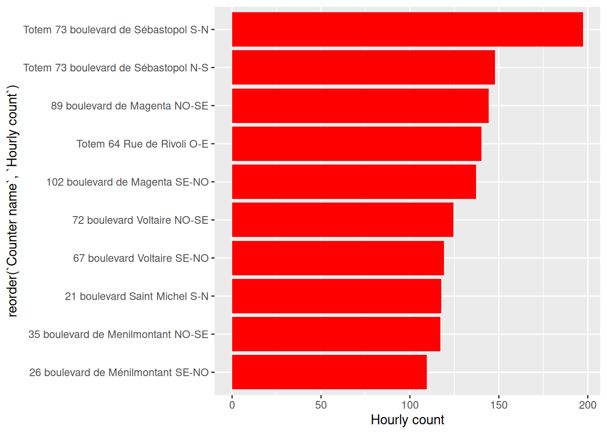
We now have a representation that starts to convey a message about the data. However, there are still problematic elements (e.g., labels) as well as missing or incorrect elements (axis titles, chart title, etc.).
The figure now conveys a message but is still hard to read.
figure1 <- figure1 + labs(
title = "The 10 counters with the highest hourly average",
x = "Counter name",
y = "Hourly average"
)
figure1ggplot is with the labs function.
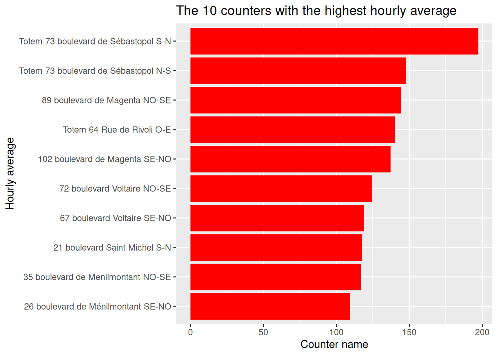
ggplot2 figure, is not very polished. Use a more minimal theme to have a white background.figure1 <- figure1 +
theme_minimal()
figure1
theme(
axis.text.x = element_text(angle = 45, hjust = 1, color = "red"),
axis.title.x = element_text(color = "red"),
plot.title = element_text(hjust = 0.5),
plot.margin = margin(1, 4, 1, 1, "cm")
)figure1 <- figure1 +
theme(
axis.text.x = element_text(angle = 45, hjust = 1, color = "red"),
axis.title.x = element_text(color = "red"),
plot.title = element_text(hjust = 0.5),
plot.margin = margin(1, 4, 1, 1, "cm")
)
figure1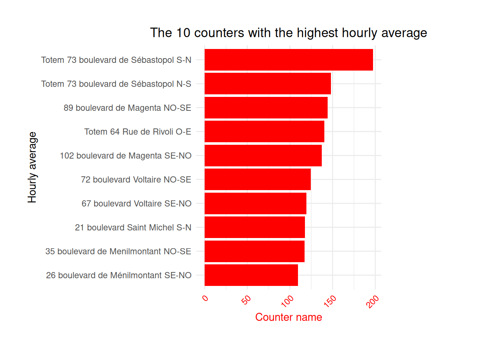
figure1 <- figure1 +
geom_text(
aes(label=round(`Hourly count`)),
position=position_dodge(width=0.9),
hjust=-0.5
)This shows that Boulevard de Sébastopol is the busiest, which will not surprise anyone cycling in Paris. If you are not familiar with Parisian geography, additional visualizations, such as a map, will be needed in a later chapter.
figure1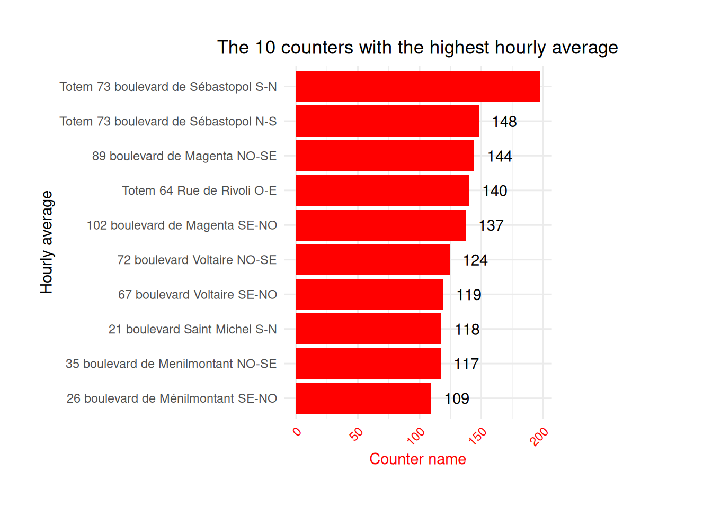
Repeat the process for figure 2 (“The 10 counters with the highest total counts”), to create a similar chart.
df2 <- df %>%
group_by(`Counter name`) %>%
summarise(`Hourly count` = sum(`Hourly count`, na.rm = TRUE)) %>%
arrange(desc(`Hourly count`)) %>%
head(10)# Create a horizontal bar plot
figure2 <- ggplot(df2, aes(y = reorder(`Counter name`, `Hourly count`), x = `Hourly count`)) +
geom_bar(stat = "identity", fill = "forestgreen") +
labs(title = "The 10 counters that recorded the most bicycles",
x = "Name of the counter",
y = "The total number of bikes recorded during the selected period") +
theme_minimal() +
theme(axis.text.x = element_text(angle = 45, hjust = 1),
axis.title.x = element_text(color = "forestgreen"),
plot.title = element_text(hjust = 0.5),
plot.margin = margin(1, 4, 1, 1, "cm"))figure2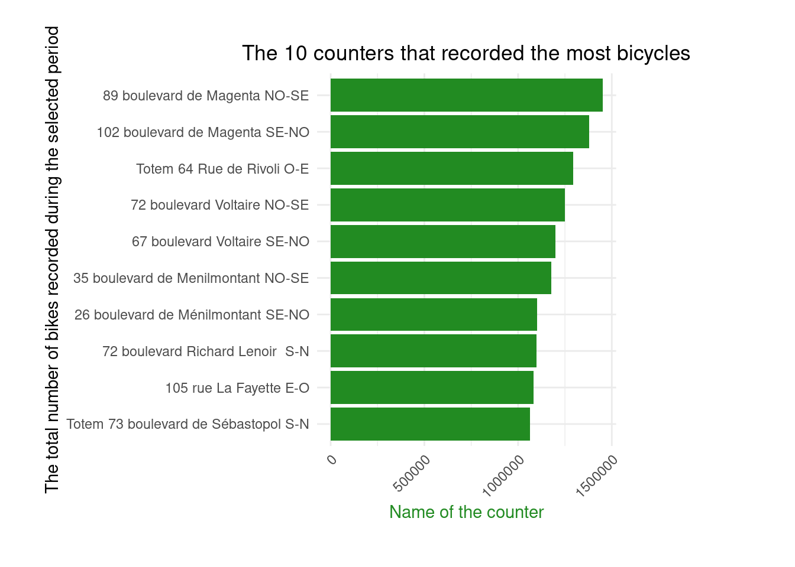
Barplots are extremely common, but from a semiology perspective, lollipop charts are preferable: they convey the same information with less visual noise (the bar widths in barplots can obscure information).
Here is an example of the second figure rendered as a lollipop chart:
df2_lollipop <- df2 %>%
mutate(x = fct_reorder(`Counter name`, `Hourly count` ), y = `Hourly count`)
figure2_lollipop <- ggplot(df2_lollipop, aes(x=x, y=y)) +
geom_segment(aes(xend=x, yend=0), alpha = 0.4) +
geom_point(size=5, color="forestgreen") +
coord_flip() +
labs(title = "The 10 counters that recorded the most bicycles",
x = "Name of the counter",
y = "The total number of bikes recorded during the selected period") +
theme_minimal() +
theme(axis.text.x = element_text(angle = 45, hjust = 1),
axis.title.x = element_text(color = "forestgreen"),
plot.title = element_text(hjust = 0.5),
plot.margin = margin(1, 4, 1, 1, "cm")) +
scale_y_continuous(labels = unit_format(unit = "M", scale=1e-6))figure2_lollipopfigure2
figure2_lollipop
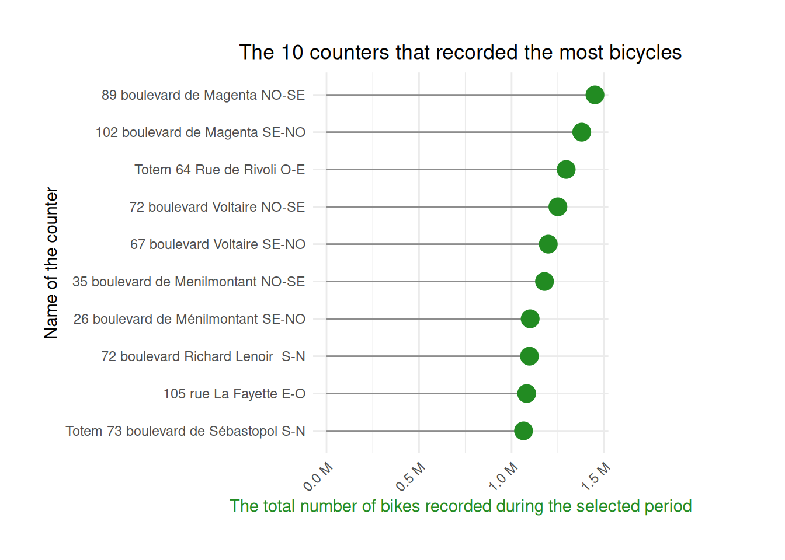
Choose your preferred representation
Redo exercise 2, but instead of a barplot, produce a lollipop chart.
We now focus on the spatial dimension of the dataset using two approaches:
To start, reproduce the third figure, again a barplot. The first step introduces time data and involves a common operation in time series: changing the date format to allow aggregation at a larger time interval.
format function to create a month variable in the YYYY-MM format ;df <- df %>%
mutate(month = format(`Counting date and time`, "%Y-%m"))# Question 2
monthly_hourly_count <- df %>%
group_by(month) %>%
summarise(value = mean(`Hourly count`, na.rm = TRUE))monthly_hourly_count# A tibble: 14 × 2
month value
<chr> <dbl>
1 2019-08 33.6
2 2019-09 55.8
3 2019-10 49.9
4 2019-11 36.0
5 2019-12 67.9
6 2020-01 66.1
7 2020-02 43.2
8 2020-03 29.4
9 2020-04 12.5
10 2020-05 54.6
11 2020-06 85.0
12 2020-07 80.7
13 2020-08 53.2
14 2020-09 98.3Apply previous recommendations to gradually construct and improve a chart similar to the third figure on the Paris Open Data page.
figure3 <- ggplot(monthly_hourly_count) +
geom_bar(aes(x = month, y = value), fill = "#ffcd00", stat = "identity") +
labs(x = "Date and time of count", y = "Average hourly count per month\nover the selected period",
title = "Average monthly bicycle counts") +
theme_minimal() +
theme(axis.text.x = element_text(angle = 45, hjust = 1),
axis.title.y = element_text(color = "#ffcd00", face = "bold"),
plot.title = element_text(hjust = 0.5),
plot.margin = margin(1, 4, 1, 1, "cm"))figure3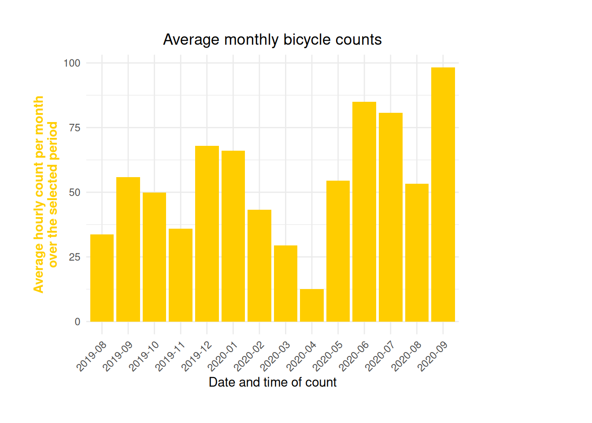
figure3
If you rather present this with a lollipop3 chart:
ggplot(monthly_hourly_count, aes(x = month, y = value)) +
geom_segment(aes(xend = month, yend = 0)) +
geom_point(color="#ffcd00", size=4) +
labs(x = "Counting date and time", y = "Average hourly count per month\nover the selected period",
title = "Average monthly bicycle counts") +
theme_minimal() +
theme(axis.text.x = element_text(angle = 45, hjust = 1),
#axis.title.y = element_text(color = "#ffcd00", face = "bold"),
plot.title = element_text(hjust = 0.5),
plot.margin = margin(1, 4, 1, 1, "cm"))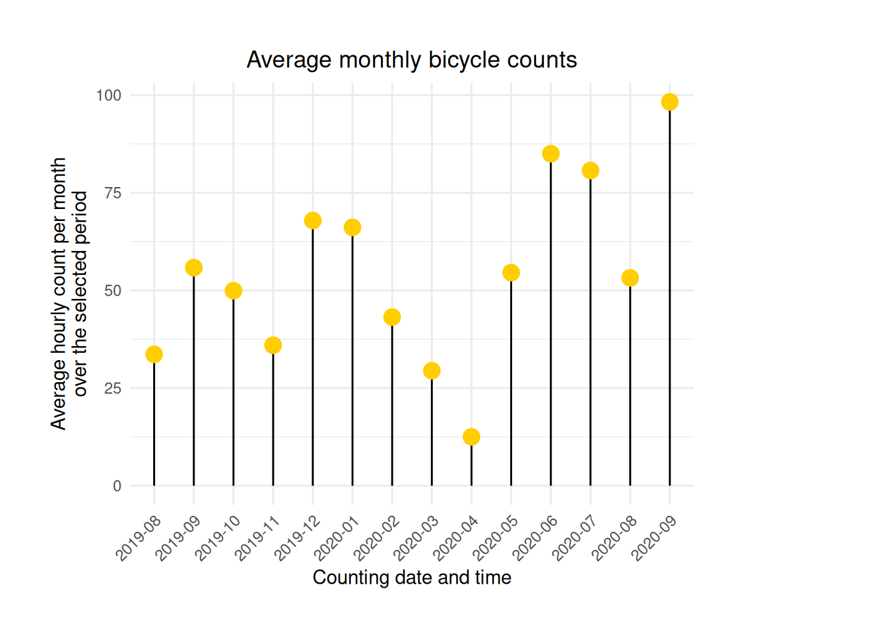
Time series visualizations are more common for data with a temporal dimension.
day variable converting timestamps to daily format (e.g. 2021-05-01).df <- df %>%
mutate(day = date(`Counting date and time`))
daily_average <- df %>%
group_by(day) %>%
summarise(value = mean(`Hourly count`, na.rm = TRUE))figure4 <- ggplot(daily_average, aes(x = day, y = value)) +
geom_line(color = "magenta")figure4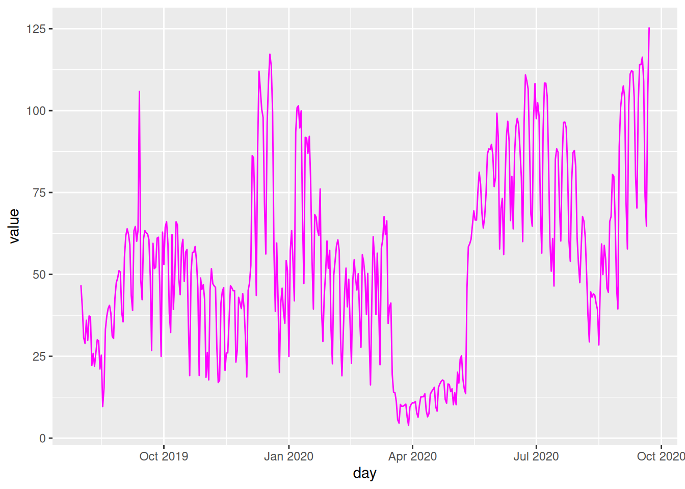
figure4 <- figure4 +
geom_area(fill="magenta", alpha = 0.6)figure4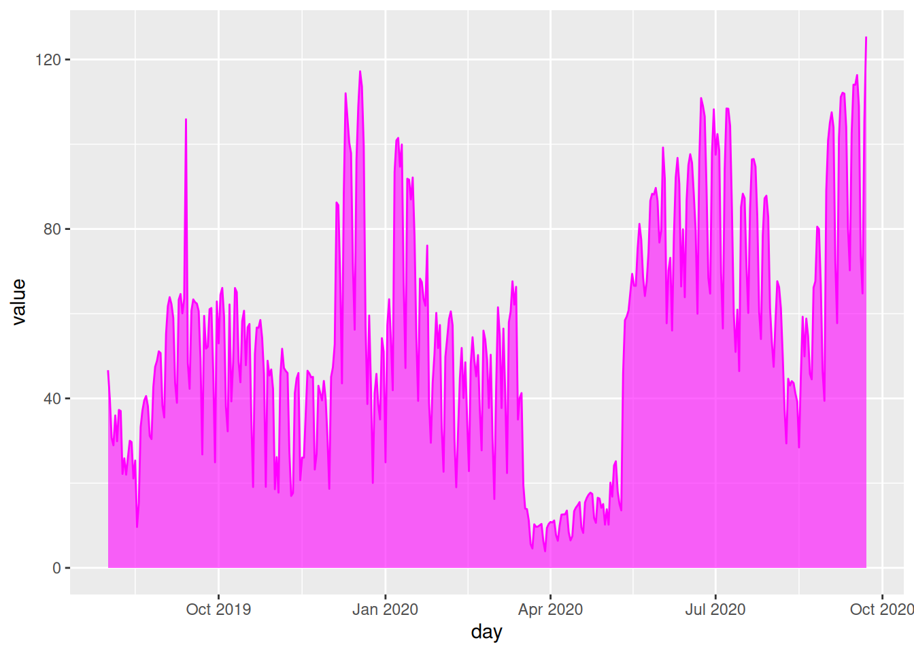
figure4 <- figure4 +
labs(x = "Counting date and time (Day)", y = "Average hourly count per day\nover the selected period",
title = "Average daily bicycle counts") +
theme_minimal() +
theme(axis.text.x = element_text(angle = 45, hjust = 1),
plot.title = element_text(hjust = 0.5),
plot.margin = margin(1, 4, 1, 1, "cm"))figure4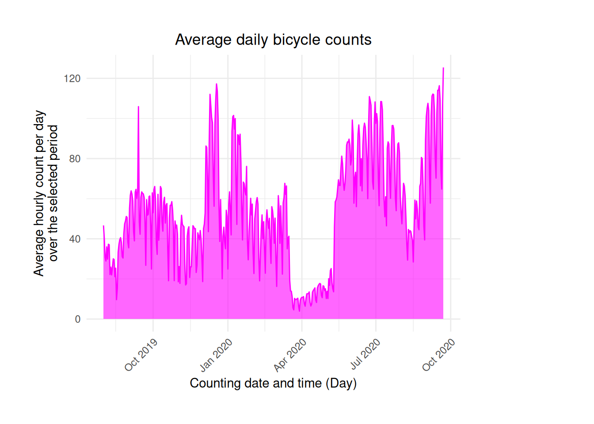
Some hints for this exercise
day function of the lubridate package
stackoverflow thread might help you out.
head(daily_average)# A tibble: 6 × 2
day value
<date> <dbl>
1 2019-08-01 46.7
2 2019-08-02 40.0
3 2019-08-03 30.7
4 2019-08-04 28.9
5 2019-08-05 36.0
6 2019-08-06 29.9After this exercise, the figure will look like this:
figure4
PlotlyThe drawback of ggplot figures is that they are not interactive. All information must be included in the plot, which can make it harder to read. If well done, a multi-level information plot can still work.
With web technologies, it is easier to offer multi-level visualizations: a first glance conveys the main message, and the user can explore additional details interactively. Interactive visualizations, now standard in dataviz, allow the reader to hover for more information or click to reveal additional details.
These visualizations rely on the web triptych: HTML, CSS, and JavaScript. users do not manipulate these languages directly, but use R libraries that automatically generate the necessary code.
Plotly figure representing figure 4 as a time series without worrying about style.plot_ly(
daily_average, x = ~day, y = ~value,
type = 'scatter', mode = 'lines'
)plot_ly(
daily_average, x = ~day, y = ~value,
fill = 'tozeroy',
type = 'scatter', mode = 'lines'
)hovertemplate and hoverinfo to enhance interactivity.fig <- plot_ly(
daily_average, x = ~day, y = ~value,
color = I("magenta"),
hovertemplate = ~paste(day, ": ", round(value), " bicycle passages per hour on average"),
hoverinfo = "text",
fill = 'tozeroy',
type = 'scatter', mode = 'lines')
fig4 <- fig %>%
layout(title = "Average daily bicycle counts",
xaxis = list(title = "Counting date and time (Day)"),
yaxis = list(title = "Average hourly count per day\nover the selected period"))fig4The interactive version is then produced.
fig4This shows the special characteristics of 2020. To highlight the first lockdown visible in the data, vertical lines can be added using documentation.
vline <- function(x = 0, color = "royalblue") {
list(
type = "line",
y0 = 0,
y1 = 1,
yref = "paper",
x0 = x,
x1 = x,
line = list(color = color, dash="dot")
)
}
fig4 %>% layout(shapes = list(vline("2020-03-17"), vline("2020-05-11")))Finally, here’s how to reproduce this figure with Plotly:
df1 <- df1 %>% mutate(`Counter name` = fct_reorder(`Counter name`, `Hourly count`))
fig <- plot_ly(
df1,
x = ~ `Hourly count`, y = ~`Counter name`,
color = I("red"),
hovertext = ~paste0(`Counter name`, ": ", round(`Hourly count`)),
hoverinfo = 'text',
type = 'bar',
name = 'Main stations')
fig <- fig %>% layout(
yaxis = list(title = 'Hourly average'),
xaxis = list(title = 'Counter name', color = "red")
)figPlotly
fct_reorder from forcats on the dataframe from exercise 1;Plotly to create your figure;PlotlyNormally, we recommend using the download URL directly to avoid creating an intermediate file on the disk. However, direct import with readr will not work here because the library does not recognize that the file is compressed without the .gz extension.↩︎
Note: displaying numbers on bars is not necessarily best practice in dataviz. It can make the scale and data variation less immediately understandable.↩︎
I removed the color on the y-axis, which I find adds little to the figure and even detracts from the message’s clarity.↩︎